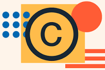

Check whether a given number is a prime number. If it is a prime, print its square root. If it is not a prime, print "Not Prime". Note: Print four decimal places only
Check whether a given number is a prime number.
If it is a prime , print its square root.
If it is not a prime, print "Not Prime".
Note: Print four decimal places only
Check whether a given number is a prime number.
If it is a prime, print its square root. If it is not a prime,
print "Not Prime".
Note: Print four decimal places only
WHO
Git A free, open source tool that developers © install on their computers to track and record changes to their source code. Git focuses on managing source code versions, and includes features like branching, backups, and support for non-linear development.
